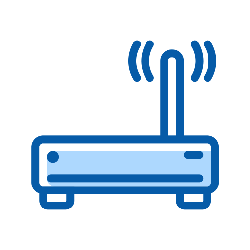
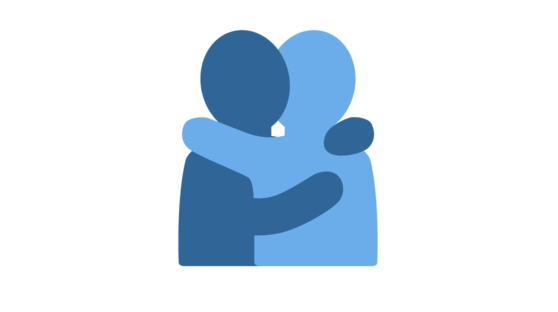

The Comox Valley Lifeline Society is a non-profit, charitable organization that provides Lifeline services to a variety of individuals who may feel reassured that help is available to them twenty four hours a day, seven days a week.
Lifeline is an easy-to-use personal emergency response system that lets you summon help any time of the day or night, even if you can't speak. All you have to do is press your Personal Help Button, worn on a wristband or pendant and a Personal Response Associate will ensure you get help fast.
If you need help, push your Personal Help Button.
Your Lifeline Communicator Unit dials our Response Centre.
A Personal Response Associate assesses your situation and sends you the help you need.
Whether it is a family member, a neighbor or ambulance, Lifeline always sends you the help you need.
This year 1.4 million people, 65 and older will fall. If you or a loved one experience a medial emergency, time is of the essence. We can help by connecting you to the right help for the situation, 24 hours a day, 365 days a year at the push of a button. Whether you need emergency services or just the assistance of a family member or friend to help you get back on your feet, we can help.
Not all falls can be prevented. If a fall does occur, older adults need to be sure they can reach help easily and quickly, especially if they are injured, in order to prevent further injury and dangerous complications. The Comox Valley Lifeline Society offers a variety of medical alert services designed specifically for older adults that provide fast, 24/7 access to expert help in an emergency. These services range from the standard HomeSafe service to the fall detection capability of the HomeSafe with AutoAlert and the freedom of the new GoSafe mobile service.
The button on this Personal Lifeline is a lifesaver—literally! Its accessible design ensures quick and effortless activation in any emergency situation. I feel empowered knowing that help is just a press away.
The Lifeline Alert Necklace is a true guardian angel! Its sleek design makes wearing it a breeze. I highly recommend for anyone prioritizing safety and independence.
The Lifeline service has been a total game-changer for my peace of mind. Its discreet necklace design is comfortable to wear, and the lightning-fast response from their team is truly impressive. It's an essential for anyone seeking reliable safety and support.